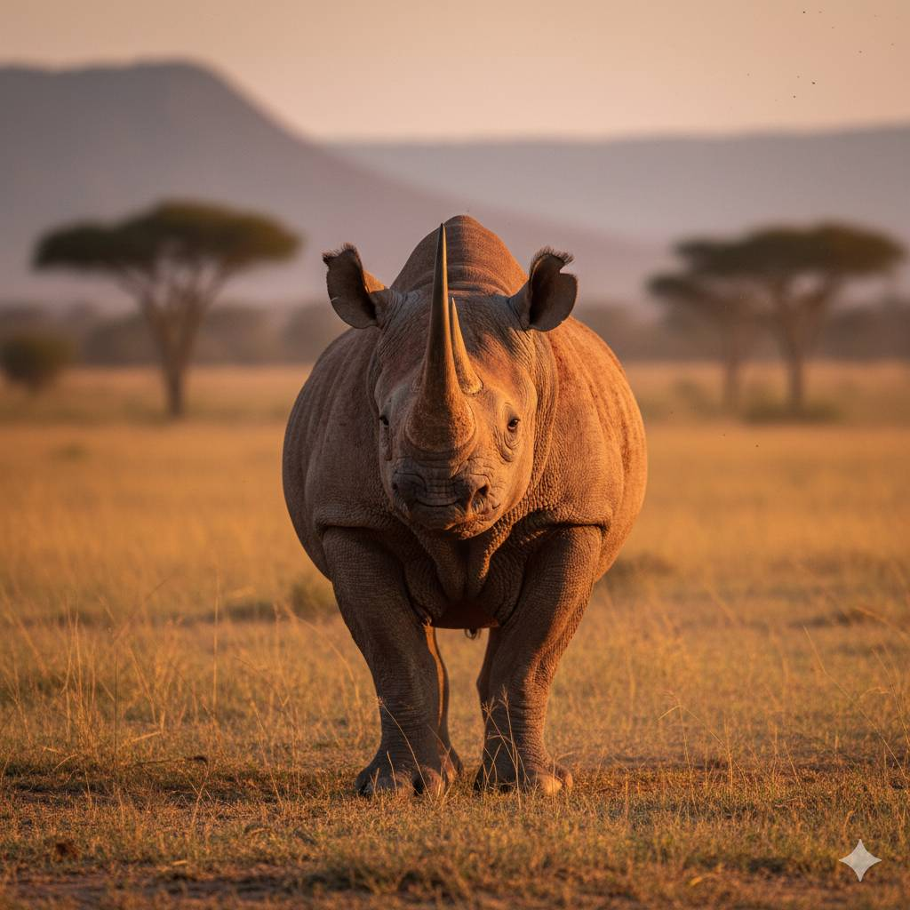
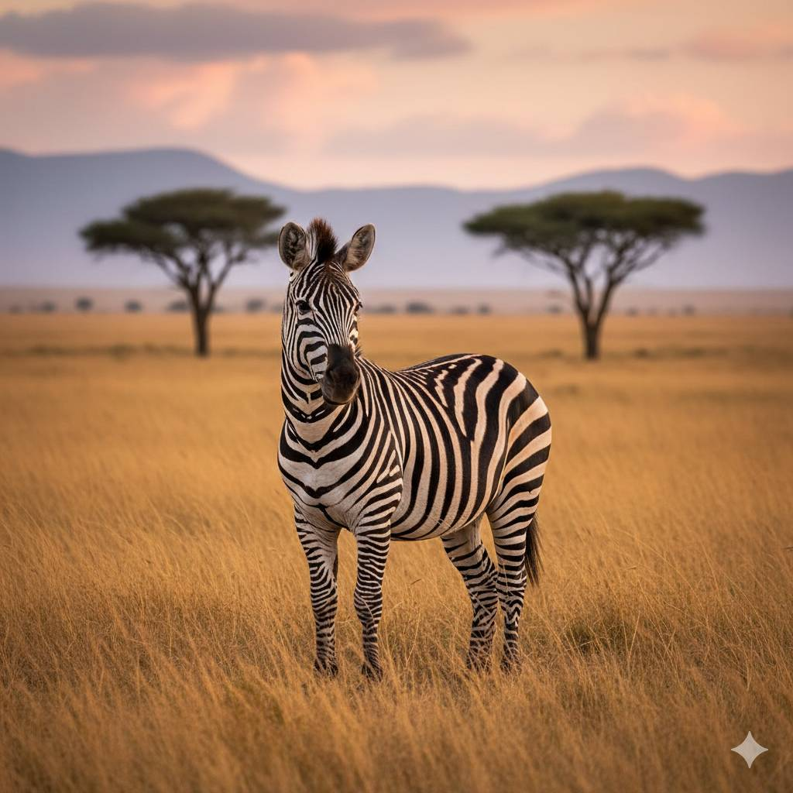

پاندا غول پیکر

وضعیت: در حال انقراض (اما شرایطش نسبت به گذشته بهتر شده)
زیستگاه: جنگلهای کوهستانی چین
ویژگیهای ظاهری: بدن بزرگ با رنگ سیاه و سفید خز ضخیم و نرم پنجههایی قوی برای گرفتن بامبو
رفتار و زندگی: بیشتر تنهازیست است بسیار آرام و کمتحرک روزانه ساعتهای طولانی غذا میخورد
تغذیه: تقریباً فقط بامبو بهخاطر کمانرژی بودن بامبو، مجبور است زیاد غذا بخورد
اهمیت: نماد جهانی حفاظت از محیط زیست حفاظت از پاندا باعث حفاظت از کل جنگل و گونههای دیگر میشود
تهدیدها: کاهش زیستگاه زادآوری کم تغییرات اقلیمی
کرگدن
وضعیت: در حال انقراض (بیشتر گونهها بهشدت در خطر هستند)
زیستگاه: آفریقا و بخشهایی از آسیا (علفزارها، جنگلها و مناطق نیمهگرمسیری)
ویژگیهای ظاهری: بدن بسیار بزرگ و سنگین با پوست ضخیم یک یا دو شاخ روی بینی پاهای کوتاه اما بسیار قوی پوست چینخورده که شبیه زره طبیعی است
رفتار و زندگی: بیشتر تنهازیست است روزها استراحت میکند و صبح و عصر فعالتر است گیاهخوار است و از علف، برگ و شاخهها تغذیه میکند
اهمیت در طبیعت: با خوردن گیاهان، به کنترل رشد پوشش گیاهی کمک میکند مسیرهایی در طبیعت ایجاد میکند که سایر حیوانات از آن استفاده میکنند
تهدیدها: شکار غیرقانونی بهخاطر شاخ از بین رفتن زیستگاه کاهش جمعیت بسیار شدید در قرن اخیر
گورخر کوهی
وضعیت: در حال انقراض
زیستگاه: مناطق کوهستانی و صخرهای آفریقای جنوبی و نامیبیا
ویژگیهای مهم: بدن باریکتر نسبت به گورخرهای دشتی پاهای قوی برای بالا رفتن از کوهها راهراههای مشخص و منظم که مثل اثر انگشت، برای هر گورخر منحصربهفرد است یال کوتاه و ایستاده روی گردن
رفتار و زندگی: در گروههای کوچک خانوادگی زندگی میکند بسیار محتاط است و در برابر خطر سریع واکنش نشان میدهد میتواند در مناطق کمآب زنده بماند و آب را ذخیره کند
دلایل در خطر بودن: شکار غیرقانونی از بین رفتن زیستگاه به دلیل گسترش شهرها و دامداری کاهش منابع غذایی طبیعی
نکتههای جالب: گورخر کوهی میتواند مسیرهای خطرناک صخرهای را با دقت طی کند، جایی که بسیاری از شکارچیان نمیتوانند نوارهای سیاه و سفید بدنش به سردرگمی شکارچیان کمک میکند برخلاف اسب، صدای خاصی برای هشدار دادن به گروه دارد یکی از مقاومترین گورخرها در شرایط سخت محیطی است